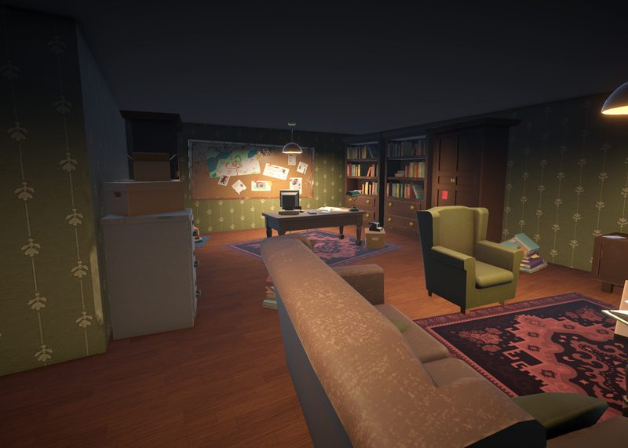
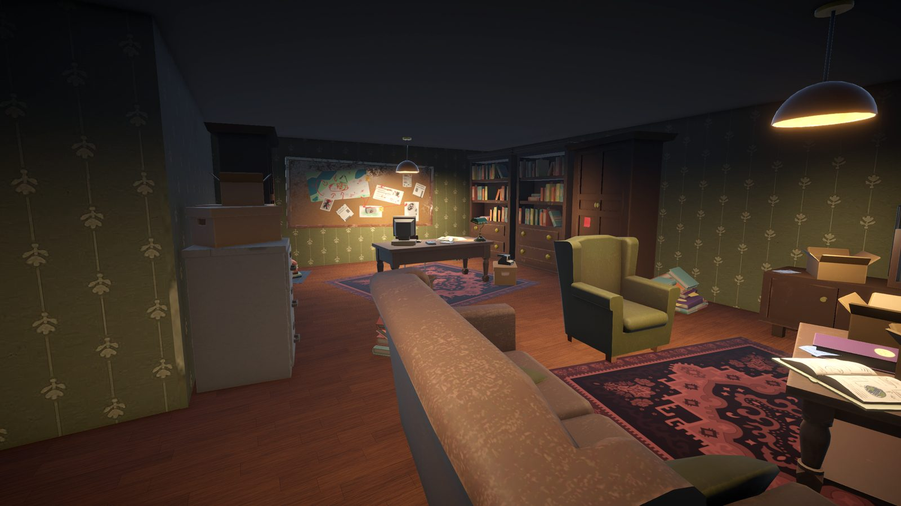
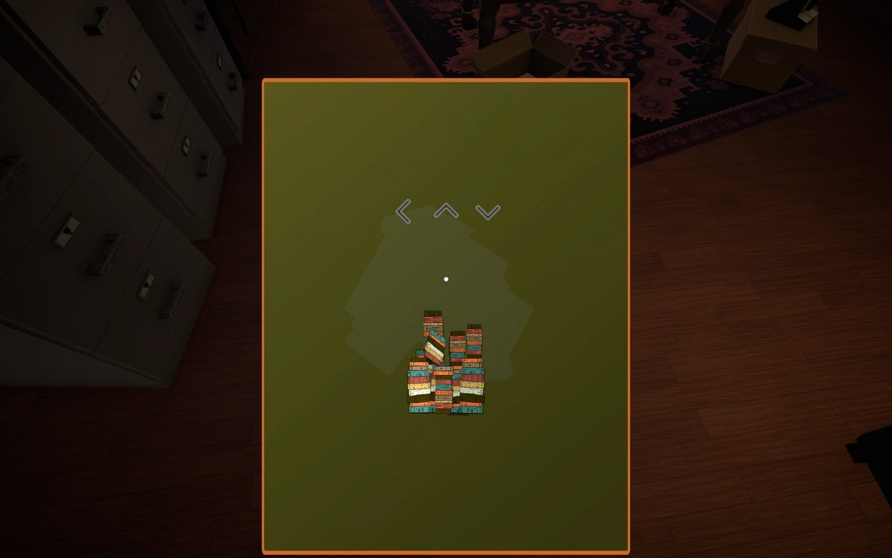
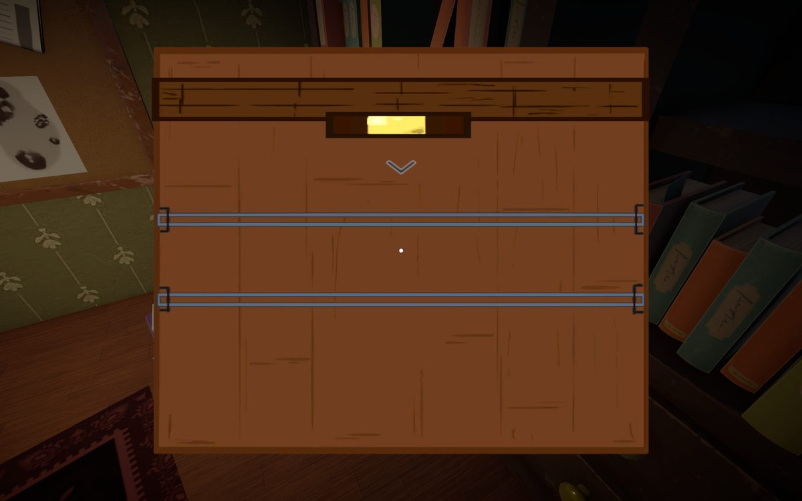
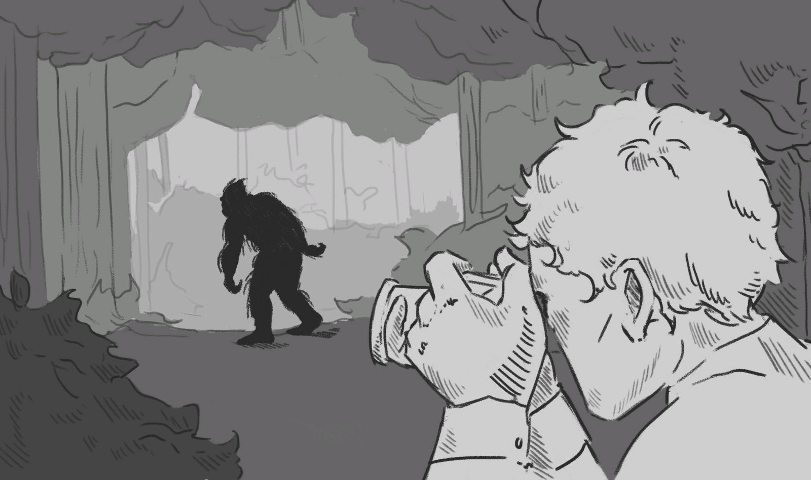

I saw It
Jeu de recherche · Projet scolaire · Unity · 2026
Search game · School project · Unity · 2026
Fouillez dans votre appartement pour retrouver les preuves que Bigfoot existe et les exposer au monde
Search your apartment for proof that Bigfoot exists and reveal it to the world

I saw It
- Rôle Game Designer · Porteur du projet
- Role Game Designer · Project lead
- Moteur / outils Unity
- Engine / tools Unity
- Durée 4 jours
- Duration 4 days
- Équipe 9 personnes
- Team 9 people
Le conceptThe concept
Le joueur incarne un chercheur en créatures légendaires qui a enfin réuni les preuves de l’existence du Bigfoot. Mais quelques minutes avant de les présenter au monde lors d’une conférence, il perd son dossier. Il ne lui reste que quelques minutes pour fouiller son appartement et reconstituer un dossier assez crédible pour convaincre le monde entier.
The player is a cryptozoologist who has finally gathered proof that Bigfoot exists. But minutes before presenting it to the world at a conference, he loses his file. He only has a few minutes to search his apartment and rebuild a file credible enough to convince the whole world.
Dans un appartement en désordre, chaque objet (tiroir, bureau, canapé…) cache un mini-jeu propre à l’objet fouillé. Les preuves trouvées rapportent des points, mais attention : certaines ne sont pas crédibles et en font perdre. À la fin du chrono, le total des points détermine laquelle des quatre fins s’affiche.
In a messy apartment, every object (drawer, desk, couch…) hides a mini-game specific to that object. Each piece of evidence found earns points, but be careful: some aren’t credible and cost points instead. When the timer runs out, the total score decides which of the four endings is shown.

Mon rôleMy role
I saw It a été réalisé en 4 jours lors d’une game jam organisée par mon école. J’ai proposé le concept, et une équipe de 9 personnes s’est formée autour du projet : 3 game artists, 3 game programmers, 1 sound designer et 2 game designers.
I saw It was made in 4 days during a game jam organized by my school. I pitched the concept, and a team of 9 people formed around the project: 3 game artists, 3 game programmers, 1 sound designer and 2 game designers.
Après avoir défini les règles générales et les mini-jeux associés à chaque objet, j’ai pris en charge le choix de toutes les preuves et l’équilibrage des points de chaque objet. Avec l’autre game designer, nous avons conçu le level design de l’appartement et le pacing de la difficulté pour atteindre chaque preuve. J’ai ensuite placé chaque preuve dans l’appartement et associé les mini-jeux aux bons objets, avant de finaliser la lisibilité et l’accessibilité des preuves.
After defining the general rules and the mini-games tied to each object, I took charge of choosing all the evidence and balancing the points for each object. With the other game designer, we designed the level design of the apartment and the difficulty pacing for reaching each piece of evidence. I then placed every piece of evidence in the apartment and assigned the mini-games to the right objects, before polishing the readability and accessibility of the evidence.

Défis de designDesign challenges
Le format game jam imposait des itérations rapides, et le jeu n’a pas pu être testé par des joueurs extérieurs. Chaque décision a donc été guidée par deux objectifs : un jeu lisible sans multiplier les indications, et un jeu rejouable.
The game jam format called for fast iterations, and the game couldn’t be tested by outside players. Every decision was therefore guided by two goals: a readable game without piling on instructions, and a replayable game.
Pour la lisibilité, nous avons réduit l’interface en jeu au strict minimum : c’est la cinématique d’introduction qui pose l’enjeu et fait comprendre au joueur ce qu’il doit faire.
For readability, we kept the in-game interface to the bare minimum: it’s the intro cutscene that sets the stakes and shows the player what to do.
Pour la rejouabilité, le jeu repose sur la maîtrise du parcours : le temps étant limité, il faut planifier son trajet dans l’appartement pour être efficace, et c’est en enchaînant les parties que le joueur apprend à l’optimiser.
For replayability, the game relies on mastering your route: with limited time, you have to plan your path through the apartment to be efficient, and it’s by playing again and again that the player learns to optimize it.

RésultatOutcome
À l’issue des 4 jours, le jeu est complet et jouable de bout en bout, avec quatre fins différentes. Une seule fonctionnalité secondaire n’a pas pu être intégrée, ce qui est rare en game jam. Faute de playtests, la difficulté reste en revanche trop élevée.
By the end of the 4 days, the game was complete and playable from start to finish, with four different endings. Only one secondary feature couldn’t be implemented, which is rare in a game jam. Without playtests, however, the difficulty remains too high.
Ce que j'ai apprisWhat I learned
Ce projet m’a appris à prendre des décisions rapidement, à travailler avec de nombreux métiers différents et à tenir compte de la charge de travail de chacun. Avec le recul, j’aurais aimé réserver du temps aux playtests pour calibrer la difficulté et pousser le jeu encore plus loin.
This project taught me to make decisions quickly, to work with many different disciplines and to take everyone’s workload into account. Looking back, I wish we had set aside time for playtests to calibrate the difficulty and push the game even further.